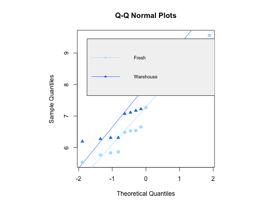

An experiment was undertaken where seventeen recently picked (Fresh)
apples were randomly selected and measured for hardness. Seventeen apples
were also randomly selected from a warehouse (Warehouse) where the
apples had been stored for one week. Data are used in Example 8.10.
A data frame with 17 observations on the following 2 variables: #'
Fresh (hardness rating measured in \(\texttt{kg}/\texttt{meter}^2\))
Warehouse (hardness rating measured in \(\texttt{kg}/\texttt{meter}^2\))
Ugarte, M. D., Militino, A. F., and Arnholt, A. T. (2008) Probability and Statistics with R. Chapman & Hall/CRC.
# Figure 8.5 attach(Apple) par(pty = "s") Altblue <- "#A9E2FF" Adkblue <- "#0080FF" fresh <- qqnorm(Fresh)old <- qqnorm(Warehouse)plot(fresh, type = "n",ylab = "Sample Quantiles", xlab = "Theoretical Quantiles")qqline(Fresh, col = Altblue)qqline(Warehouse, col = Adkblue)points(fresh, col = Altblue, pch = 16, cex = 1.2)points(old, col = Adkblue, pch = 17)legend(-1.75, 9.45, c("Fresh", "Warehouse"), col = c(Altblue, Adkblue), text.col = c("black","black"), pch = c(16, 17), lty = c(1, 1), bg = "gray95", cex = 0.75)title("Q-Q Normal Plots")detach(Apple) # Trellis approach qqmath(~c(Fresh, Warehouse), type = c("p","r"), pch = c(16, 17), cex = 1.2, col=c("#A9E2FF", "#0080FF"), groups=rep(c("Fresh", "Warehouse"), c(length(Fresh), length(Warehouse))), data = Apple, ylab = "Sample Quantiles", xlab = "Theoretical Quantiles")